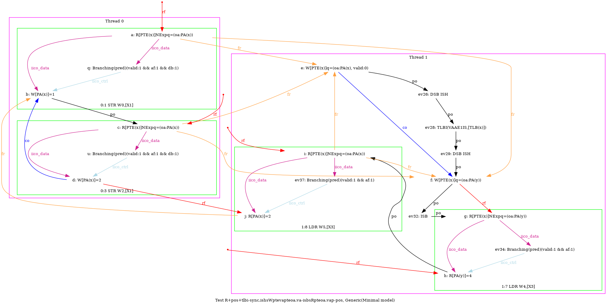
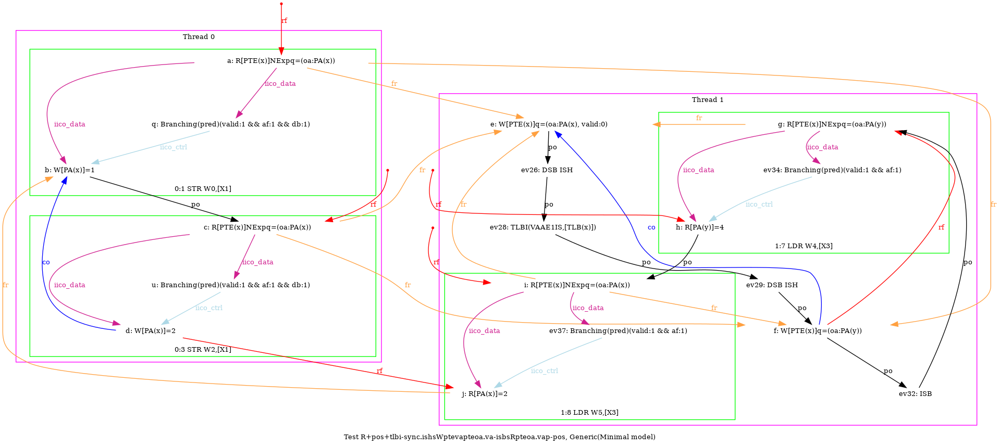
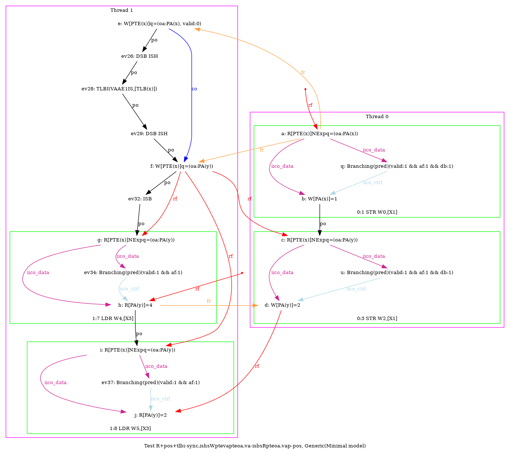
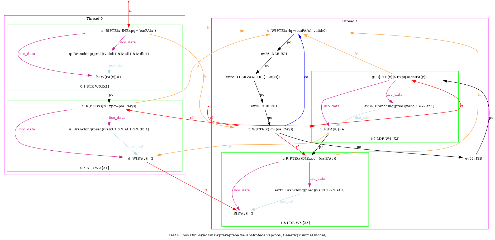

   
AArch64 R+pos+tlbi-sync.ishsWptevapteoa.va-isbsRpteoa.vap-pos
"PosWW CoePPteVA TLBI-sync.ISHsWWPteVAPteOA.VA ISBsWRPteOA.VAP PosRR Fre"
Variant=imprecise
Cycle=Fre PosWW CoePPteVA TLBI-sync.ISHsWWPteVAPteOA.VA ISBsWRPteOA.VAP PosRR
Relax=[PteVA,TLBI-sync.ISHsWW,PteOA,PteVA,ISBsWR]
Safe=Fre Coe PosWW PosRR
Generator=diy7 (version 7.56+02~dev)
Com=Co Fr
Orig=PosWW CoePPteVA TLBI-sync.ISHsWWPteVAPteOA.VA ISBsWRPteOA.VAP PosRR Fre
{ int x=0; int y=4;
0:X1=x;
1:X0=PTE(x); 1:X1=(oa:PA(x), valid:0); 1:X2=(oa:PA(y)); 1:X3=x;
}
P0 | P1 ;
MOV W0,#1 | STR X1,[X0] ;
STR W0,[X1] | LSR X6,X3,#12 ;
MOV W2,#2 | DSB ISH ;
STR W2,[X1] | TLBI VAAE1IS,X6 ;
| DSB ISH ;
| STR X2,[X0] ;
| ISB ;
| LDR W4,[X3] ;
| LDR W5,[X3] ;
exists (1:X4=4 /\ 1:X5=2 /\ [x]=1 /\ ~fault(P0,x) /\ ~fault(P1,x))